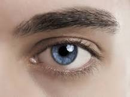
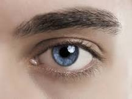

The fibrous layer, which gives the lid its mechanical stability, is made up of the thick, and relatively rigid, tarsal plates, bordering directly on the palpebral aperture, and the much thinner palpebral fascia, or sheet of connective tissue; the two together are called the septum orbitale. When the lids are closed, the whole opening of the orbit is covered by this septum. Two ligaments, the medial and lateral palpebral ligaments, attached to the orbit and to the septum orbitale, stabilize the position of the lids in relation to the globe. The medial ligament is by far the stronger.
Closure of the lids is achieved by contraction of the orbicularis muscle, a single oval sheet of muscle extending from the regions of the forehead and face and surrounding the orbit into the lids. It is divided into orbital and palpebral portions, and it is essentially the palpebral portion, within the lid, that causes lid closure. The palpebral portion passes across the lids from a ligament called the medial palpebral ligament and from the neighbouring bone of the orbit in a series of half ellipses that meet outside the outer corner of the eye, the lateral canthus, to form a band of fibres called the lateral palpebral raphe. Additional parts of the orbicularis have been given separate names—namely, Horner’s muscle and the muscle of Riolan; they come into close relation with the lacrimal apparatus and assist in drainage of the tears. The muscle of Riolan, lying close to the lid margins, contributes to keeping the lids in close apposition. The orbital portion of the orbicularis is not normally concerned with blinking, which may be carried out entirely by the palpebral portion; however, it is concerned with closing the eyes tightly. The skin of the forehead, temple, and cheek is then drawn toward the medial (nose) side of the orbit, and the radiating furrows, formed by this action of the orbital portion, eventually lead to the so-called crow’s feet of elderly persons. It must be appreciated that the two portions can be activated independently; thus, the orbital portion may contract, causing a furrowing of the brows that reduces the amount of light entering from above, while the palpebral portion remains relaxed and allows the eyes to remain open. Get a Britannica Premium subscription and gain access to exclusive content. Opening of the eye is not just the result of passive relaxation of the orbicularis muscle but also is the effect of the contraction of the levator palpebrae superioris muscle of the upper lid. This muscle takes origin with the extraocular muscles at the apex of the orbit as a narrow tendon and runs forward into the upper lid as a broad tendon, the levator aponeurosis, which is attached to the forward surface of the tarsus and the skin covering the upper lid. Contraction of the muscle causes elevation of the upper eyelid. The nervous connections of this muscle are closely related to those of the extraocular muscle required to elevate the eye, so that when the eye looks upward the upper eyelid tends to move up in unison. The orbicularis and levator are striated muscles under voluntary control. The lids also contain smooth (involuntary) muscle fibres that are activated by the sympathetic division of the autonomic system and tend to widen the palpebral fissure (the eye opening) by elevation of the upper, and depression of the lower, lid. In addition to the muscles already described, other facial muscles often cooperate in the act of lid closure or opening. Thus, the corrugator supercilii muscles pull the eyebrows toward the bridge of the nose, making a projecting “roof” over the medial angle of the eye and producing characteristic furrows in the forehead; the roof is used primarily to protect the eye from the glare of the sun. The pyramidalis, or procerus, muscles occupy the bridge of the nose; they arise from the lower portion of the nasal bones and are attached to the skin of the lower part of the forehead on either side of the midline; they pull the skin into transverse furrows. In lid opening, the frontalis muscle, arising high on the forehead, midway between the coronal suture, a seam across the top of the skull, and the orbital margin, is attached to the skin of the eyebrows. Contraction therefore causes the eyebrows to rise and opposes the action of the orbital portion of the orbicularis; the muscle is especially used when one gazes upward. It is also brought into action when vision is rendered difficult either by distance or the absence of sufficient light.
The outermost layer of the lid is the skin, with features not greatly different from skin on the rest of the body, with the possible exception of large pigment cells, which, although found elsewhere, are much more numerous in the skin of the lids. The cells may wander, and it is these movements of the pigment cells that determine the changes in coloration seen in some people with alterations in health. The skin has sweat glands and hairs. As the junction between skin and conjunctiva is approached, the hairs change their character to become eyelashes.
The eye is kept moist by secretions of the lacrimal glands (tear glands). These almond-shaped glands under the upper lids extend inward from the outer corner of each eye. Each gland has two portions. One portion is in a shallow depression in the part of the eye socket formed by the frontal bone. The other portion projects into the back part of the upper lid. The ducts from each gland, three to 12 in number, open into the superior conjunctival fornix, or sac. From the fornix, the tears flow down across the eye and into the puncta lacrimalia, small openings at the margin of each eyelid near its inner corner. The puncta are openings into the lacrimal ducts; these carry the tears into the lacrimal sacs, the dilated upper ends of the nasolacrimal ducts, which carry the tears into the nose. The evaporation of the tears as they flow across the eye is largely prevented by the secretion of oily and mucous material by other glands. Thus, the meibomian, or tarsal glands, consist of a row of elongated glands extending through the tarsal plates; they secrete an oil that emerges onto the surface of the lid margin and acts as a barrier for the tear fluid, which accumulates in the grooves between the eyeball and the lid barriers.
Contact us:8056500624
Email:arunmechbit@gmail.com